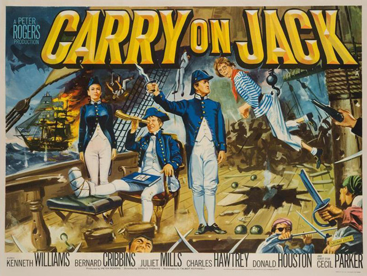
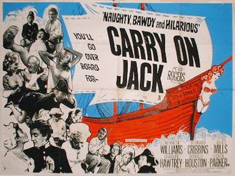
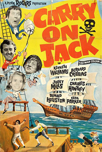

Peter Rogers
Jean Hamilton (uncredited)
The film opens with the death of Admiral Horatio Nelson (Jimmy Thompson), whose last words are that Britain needs a bigger navy with more men, followed by his famous request for a kiss to Hardy (Anton Rodgers). In the main story, Albert Poop-Decker (Bernard Cribbins) has taken over 8 years and still not qualified as midshipman, but is promoted by the First Sea Lord (Cecil Parker) as England needs officers. He is to join the frigate HMS Venus at Plymouth. Arriving to find the crew all celebrating as they are sailing tomorrow, he takes a sedan chair with no bottom (so he has to run), carried by a young man and his father (Jim Dale and Ian Wilson, respectively) to Dirty Dick's Tavern.
Mobbed by women in the tavern as he is holding a sovereign aloft (as advised by Dale), he is rescued by serving maid, Sally (Juliet Mills). She wants to go to sea to find her shanghaied boyfriend Roger, but landlord Ned (George Woodbridge) has let her down. She finds that Poop-Decker has not reported to the ship yet and is unknown to them, so in a room upstairs she knocks him out and takes his midshipman's uniform.
Poop-Decker wakes and dons a dress to cover his long johns, and downstairs, along with a cess pit cleaner named Walter Sweetly (Charles Hawtrey), is shanghaied by a press gang run by the Venus' First Officer Lieutenant Jonathan Howett (Donald Houston) and his bosun, Mr Angel (Percy Herbert). They come to when at sea and are introduced to Captain Fearless (Kenneth Williams). Poop-Decker makes himself known, but there is already a Midshipman Poop-Decker aboard – Sally, in disguise. Poop-Decker, as a hopeless seaman, goes on to continually upset Howett by doing the wrong thing. Sally reveals her true identity to Poop-Decker after he has been punished, and he decides to let things continue as they are. Eventually, in the course of the film Poop-Decker and Sally fall in love with each other.
After three months at sea and no action, the crew are very restless, and when they finally see a Spanish ship, the Captain has them sail away from it. Howett and Angel hatch a plot, making it look like the ship has been boarded by the enemy during a night raid and using Poop-Decker as an expendable dupe to get the Captain leave the ship on his own volition. Poop-Decker, Sweetly and Sally thus help the Captain into a boat, and they leave the ship, but while leaving his cabin, the Captain gets a splinter in his foot, which later goes gangrenous. When they reach dry land, Captain Fearless reckons that they are in France and they need only to walk a short distance to reach Calais, while they are actually standing on Spanish soil. Sally and Poop-Decker spot a party of civilians and steal their clothes while they are bathing.
Now in charge of the ship, Howett and Angel sail for Cadiz and plan on taking it from Don Luis (Patrick Cargill), the Spanish Governor. They are successful, but their plot is ruined by Poop-Decker's group, who stumble into Cadiz (believing it to be Le Havre) and recapture the Venus. Sailing back to England, they encounter a pirate ship, whose crew seizes the Venus. The Captain (Patch, played by Peter Gilmore) turns out to be Sally's lost love Roger, but upon seeing him as a coarse, brutal rogue, she no longer wants to have anything to do with him. In order to force her compliance, Patch and Hook (Ed Devereaux) try to make Poop-Decker and Fearless walk the plank, but Poop-Decker manages to escape and cut down a sail, which covers the pirates, capturing them.
In Cadiz, the former crew of the Venus are taken to be shot, but escape with five empty Spanish Men of War to England for prize money and glory. They are within sight of England when they encounter the Venus. While Poop-Decker, Sally and Walter are working below decks on cutting off Fearless's badly infected leg, a fire gets out of control on deck and burns a sail, which sets off the Venus' primed cannons, hitting all five Spanish ships and thus once again thwarting Howett's shot at fame and glory. Poop-Decker and his companions end up at the Admiralty as heroes. Fearless is promoted to Admiral and given a desk job. Poop-Decker and Sweetly are given the rank of honorary Captains, with pensions, but Poop-Decker reveals that he is going to leave the service to marry Sally.
Filming dates: 2 September – 26 October 1963.
Interiors: Pinewood Studios, Buckinghamshire.
Exteriors: Frensham Pond. The background to the scenes with HMS Venus on fire and "firing" on the other ships is Kimmeridge Bay, Dorset.
Radio Times - "The innuendos continue as the Carry On crew takes to the seas in the first of the historical costume parodies tackled by the team. Alas, some regulars are missing, making this one of the less memorable productions in the series. Bernard Cribbins in the lead role doesn't carry the same clout as Sid James at his distastefully smutty best, but longtime Carry On director Gerald Thomas manages to keep the fun shipshape and Bristol fashion, so it's still a must for die-hard fans."

